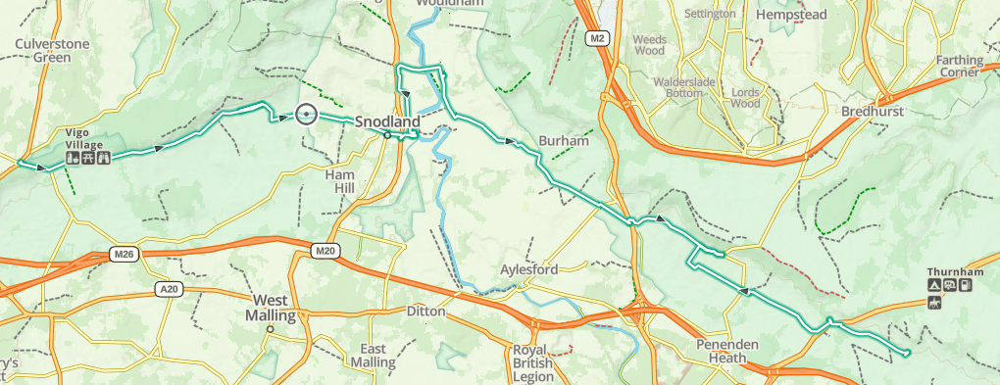
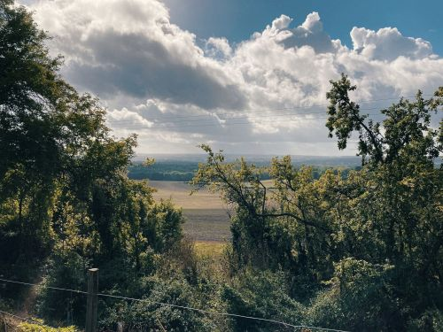
|
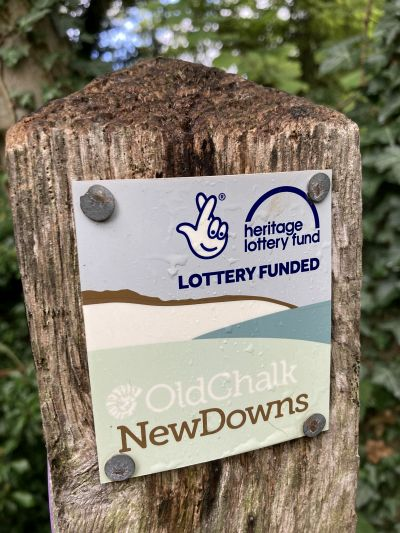
|
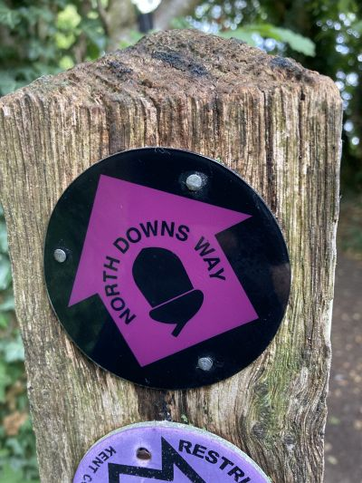
|
|---|---|---|
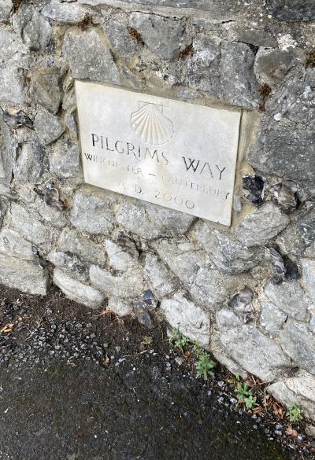
|
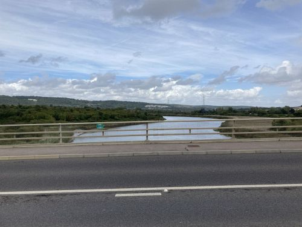
This picture is
lacking in interest, but important in context. Here I am
crossing the River Medway, which has great historical
significance. Besides the location of battles and
boat-building/naval history, it serves to distinguish how
someone from Kent refers to himself. Those of the diocese
west of the river are known as "Kentish Men" (or Maids). To
the east, they are "Men (Maids) of Kent". |
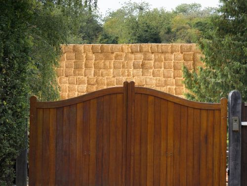
|
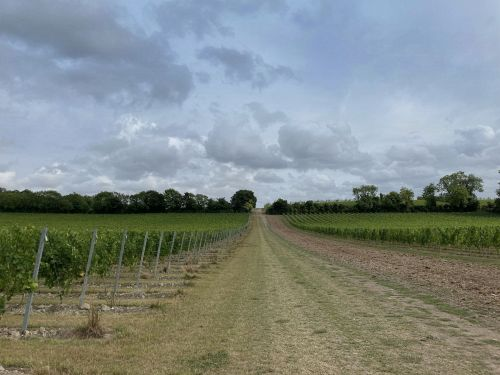
|
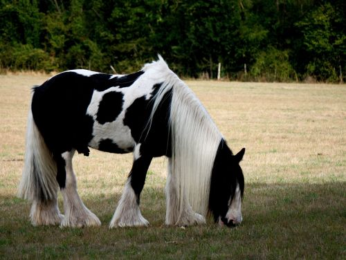
|
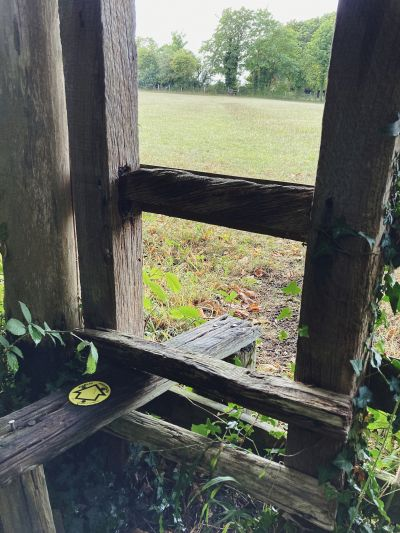
|
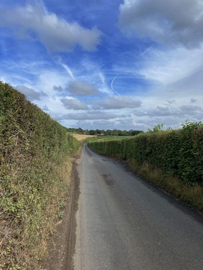
|